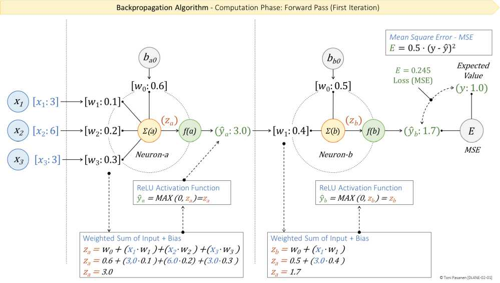
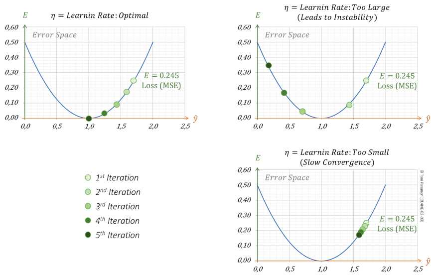

Ch2 用两个神经元组成最小前向网络：输入→隐藏神经元→输出神经元。每个都做“加权和→激活”。前向就是一层层算过去得到 ŷ。书 p55-57 一步步给数字，跟着算一遍比看十遍管用。
用平方误差 E = (y - ŷ)²（或 1/2 倍）衡量“预测与真相差多远”。E 越大，说明权重越离谱，后面反向要大调；E 越小，微调即可。记住：前向算 ŷ，反向靠 E 指导调参。
LR 是每次更新的步长。太大：来回震荡甚至发散（像 OSPF cost 调得太激进，来回翻）；太小：走得慢、卡在局部。书 p59 强调 LR 是超参数，需试。网工记忆法：LR = TCP 拥塞窗口增大幅度，太大丢包，太小利用率低。


默写：前向三步（加权和→激活→算误差），并举一个“步长太大翻车”的运维例子。